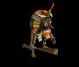
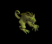
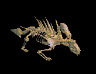
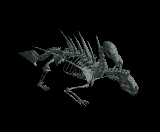

槍投擲機 をドロップするmob一覧
一覧ページへ
| 斧骸骨戦士 | アンデット | 一般1 | |||||||
|---|---|---|---|---|---|---|---|---|---|
 | 両手剣(410) | 鈍器(270) | 矢(410) | 足(230) | 槍投擲機(210) | 帰還(160) | 鎌(410) | 魔弾(410) | |
| 攻撃骸骨戦士 | アンデット | 一般2 | |||||||
 | 両手剣(380) | ステッキ(250) | 盾(380) | 足(210) | 槍投擲機(190) | 帰還(150) | 鎌(380) | ||
| 骸骨狂戦士 | アンデット | 一般3 | |||||||
 | 両手剣(360) | 鈍器(240) | 矢(360) | 足(200) | 槍投擲機(180) | 帰還(140) | 鎌(360) | 魔弾(240) | |
| 死の斧 | アンデット | セミ1 | |||||||
 | 両手剣(390) | ステッキ(260) | 盾(390) | 足(220) | 槍投擲機(200) | 帰還(160) | 鎌(390) | ||
| 地獄の斧 | アンデット | ボス1 | |||||||
 | 両手剣(470) | 鈍器(310) | 盾(470) | 足(260) | 槍投擲機(240) | 帰還(190) | 鎌(470) | ||
| 両刀骸骨戦士 | アンデット | 一般1 | |||||||
 | 片手剣(410) | 弓(270) | 矢(410) | 兜・帽子(230) | 槍投擲機(210) | 帰還(160) | クロー(410) | 銃(270) | 魔弾(410) |
| 防御骸骨戦士 | アンデット | 一般2 | |||||||
 | 片手剣(380) | 槍(250) | 弾(380) | 兜・帽子(210) | 槍投擲機(190) | 帰還(150) | クロー(380) | 箒(250) | |
| 骸骨剣士 | アンデット | 一般3 | |||||||
 | 片手剣(360) | 弓(240) | 矢(360) | 兜・帽子(200) | 槍投擲機(180) | 帰還(140) | クロー(360) | 銃(240) | 魔弾(360) |
| 死の双剣士 | アンデット | セミ1 | |||||||
 | 片手剣(390) | 槍(260) | 鍵(30) | 兜・帽子(220) | 槍投擲機(200) | 帰還(160) | クロー(390) | 箒(260) | |
| 地獄の双剣 | アンデット | ボス1 | |||||||
 | 片手剣(470) | 弓(310) | 鍵(50) | 兜・帽子(260) | 槍投擲機(240) | 帰還(190) | クロー(470) | 銃(310) | |
| レッドアイ信奉者 | 人間 | 一般1 | |||||||
 | 笛(410) | 牙(270) | イベント(410) | 鎧(230) | 槍投擲機(210) | 十字架(50) | 双剣(270) | ||
| 原人 | 人間 | 一般2 | |||||||
 | 笛(380) | 牙(250) | イベント(380) | グローブ(210) | 槍投擲機(190) | 十字架(60) | 双剣(250) | ||
| 原始人 | 人間 | 一般3 | |||||||
|  | 笛(360) | 牙(240) | 状態異常回復1(360) | 足(200) | 槍投擲機(180) | 十字架(70) | 双剣(240) | ||
| イーター | 人間 | セミ1 | |||||||
 | 笛(390) | 牙(260) | 状態異常回復1(390) | グローブ(220) | 槍投擲機(200) | 十字架(80) | 双剣(260) | ||
| 呪術者 | 人間 | ボス1 | |||||||
 | 笛(470) | 牙(310) | 状態異常回復1(470) | 足(260) | 槍投擲機(240) | 十字架(90) | 双剣(310) | ||
| リザードマン | 悪魔 | 一般1 | |||||||
 | 槍(410) | 両手剣(270) | イベント(410) | 鎧(230) | 槍投擲機(210) | 肩刺青(90) | 鎌(270) | 箒(410) | |
| リザードウォリア | 悪魔 | 一般2 | |||||||
 | 槍(380) | 両手剣(250) | イベント(380) | 鎧(210) | 槍投擲機(190) | 肩刺青(100) | 鎌(250) | 箒(380) | |
| リザードキリング | 悪魔 | 一般3 | |||||||
 | 槍(360) | 両手剣(240) | イベント(360) | 鎧(200) | 槍投擲機(180) | 肩刺青(110) | 鎌(240) | 箒(360) | |
| ナーガファイター | 悪魔 | セミ1 | |||||||
 | 槍(390) | 両手剣(260) | イベント(390) | 鎧(220) | 槍投擲機(200) | 肩刺青(120) | 鎌(260) | 箒(390) | |
| ナーガスフィア | 悪魔 | ボス1 | |||||||
 | 槍(470) | 両手剣(310) | イベント(470) | グローブ(260) | 槍投擲機(240) | 肩刺青(130) | 鎌(310) | 箒(470) | |
| ワーラット | 悪魔 | 一般2 | |||||||
 | 投擲(380) | ステッキ(250) | 矢(380) | 足(210) | 槍投擲機(190) | 帰還(150) | 魔弾(380) | ||
| ラットシーフ | 悪魔 | 一般4 | |||||||
|  | 投擲(300) | ステッキ(200) | 矢(300) | 足(170) | 槍投擲機(150) | 能力向上2(120) | 魔弾(300) | ||
| バフォメット | 悪魔 | ボス3 | |||||||
 | 槍(510) | 鞭(340) | CP回復(510) | 足(280) | 槍投擲機(260) | 特殊1(200) | 箒(510) | ||
| 野良犬 | 動物 | 一般1 | |||||||
 | 牙(410) | 笛(270) | 鍵(10) | 職業鎧(230) | 槍投擲機(210) | 特殊1(160) | 双剣(410) | ||
| ウルフ | 動物 | 一般3 | |||||||
 | 牙(360) | 弓(240) | 状態異常回復1(360) | マント(200) | 槍投擲機(180) | 特殊1(140) | 双剣(360) | 銃(240) | |
| レッドアイ警備犬 | 動物 | セミ1 | |||||||
 | 牙(390) | 鞭(260) | 鍵(30) | 職業鎧(220) | 槍投擲機(200) | 特殊1(160) | 双剣(390) | ||
| ダイアーウルフ | 動物 | セミ2 | |||||||
 | 牙(420) | 鈍器(280) | CP回復(420) | 足(230) | 槍投擲機(210) | 特殊1(170) | 双剣(420) | ||
| ヘルハウンド | 動物 | ボス2 | |||||||
 | 牙(490) | 両手剣(330) | 鍵(50) | 職業鎧(270) | 槍投擲機(250) | 特殊1(200) | 鎌(330) | 双剣(490) | |
| 斧骸骨戦士Ex | アンデット | 一般1 | |||||||
| 両手剣(410) | 鈍器(270) | 矢(410) | 足(230) | 槍投擲機(210) | 帰還(160) | 鎌(410) | 魔弾(410) | |
| 攻撃骸骨戦士Ex | アンデット | 一般2 | |||||||
| 両手剣(380) | ステッキ(250) | 盾(380) | 足(210) | 槍投擲機(190) | 帰還(150) | 鎌(380) | ||
| 骸骨狂戦士Ex | アンデット | 一般3 | |||||||
| 両手剣(360) | 鈍器(240) | 矢(360) | 足(200) | 槍投擲機(180) | 帰還(140) | 鎌(360) | 魔弾(360) | |
| 死の斧Ex | アンデット | セミ1 | |||||||
| 両手剣(450) | ステッキ(300) | 盾(450) | 足(250) | 槍投擲機(230) | 帰還(180) | 鎌(450) | ||
| 地獄の斧Ex | アンデット | ボス1 | |||||||
| 両手剣(1200) | 鈍器(800) | 盾(1200) | 足(670) | 槍投擲機(600) | 帰還(480) | 鎌(1200) | ||
| 両刀骸骨戦士Ex | アンデット | 一般1 | |||||||
| 片手剣(410) | 弓(270) | 矢(410) | 兜・帽子(230) | 槍投擲機(210) | 帰還(160) | クロー(410) | 銃(270) | 魔弾(410) |
| 防御骸骨戦士Ex | アンデット | 一般2 | |||||||
| 片手剣(380) | 槍(250) | 弾(380) | 兜・帽子(210) | 槍投擲機(190) | 帰還(150) | クロー(380) | 箒(250) | |
| 骸骨剣士Ex | アンデット | 一般3 | |||||||
| 片手剣(360) | 弓(240) | 矢(360) | 兜・帽子(200) | 槍投擲機(180) | 帰還(140) | クロー(360) | 銃(240) | 魔弾(360) |
| 死の双剣士Ex | アンデット | セミ1 | |||||||
| 片手剣(450) | 槍(300) | 鍵(30) | 兜・帽子(250) | 槍投擲機(230) | 帰還(180) | クロー(450) | 箒(300) | |
| 地獄の双剣Ex | アンデット | ボス1 | |||||||
| 片手剣(1200) | 弓(800) | 鍵(50) | 兜・帽子(670) | 槍投擲機(600) | 帰還(480) | クロー(1200) | 銃(800) | |
| レッドアイ信奉者Ex | 人間 | 一般1 | |||||||
| 笛(410) | 牙(270) | イベント(410) | 鎧(230) | 槍投擲機(210) | 十字架(50) | 双剣(270) | ||
| 原人Ex | 人間 | 一般2 | |||||||
| 笛(380) | 牙(250) | イベント(380) | グローブ(210) | 槍投擲機(190) | 十字架(60) | 双剣(250) | ||
| 原始人Ex | 人間 | 一般3 | |||||||
| 笛(360) | 牙(240) | 状態異常回復1(360) | 足(200) | 槍投擲機(180) | 十字架(70) | 双剣(240) | |||
| イーターEx | 人間 | セミ1 | |||||||
| 笛(450) | 牙(300) | 状態異常回復1(450) | グローブ(250) | 槍投擲機(230) | 十字架(80) | 双剣(300) | ||
| 呪術者Ex | 人間 | ボス1 | |||||||
| 笛(1200) | 牙(800) | 状態異常回復1(1200) | 足(670) | 槍投擲機(600) | 十字架(90) | 双剣(800) | ||
| リザードマンEx | 悪魔 | 一般1 | |||||||
| 槍(410) | 両手剣(270) | イベント(410) | 鎧(230) | 槍投擲機(210) | 肩刺青(90) | 鎌(270) | 箒(410) | |
| リザードウォリアEx | 悪魔 | 一般2 | |||||||
| 槍(380) | 両手剣(250) | イベント(380) | 鎧(210) | 槍投擲機(190) | 肩刺青(100) | 鎌(250) | 箒(380) | |
| キラーリザードEx | 悪魔 | 一般3 | |||||||
| 槍(360) | 両手剣(240) | イベント(360) | 鎧(200) | 槍投擲機(180) | 肩刺青(110) | 鎌(240) | 箒(360) | |
| ナーガファイタEx | 悪魔 | セミ1 | |||||||
| 槍(450) | 両手剣(300) | イベント(450) | 鎧(250) | 槍投擲機(230) | 肩刺青(120) | 鎌(300) | 箒(450) | |
| ナーガスフィアEx | 悪魔 | ボス1 | |||||||
| 槍(1200) | 両手剣(800) | イベント(1200) | グローブ(670) | 槍投擲機(600) | 肩刺青(130) | 鎌(800) | 箒(1200) | |
| ワーラットEx | 悪魔 | 一般2 | |||||||
| 投擲(380) | ステッキ(250) | 矢(380) | 足(210) | 槍投擲機(190) | 帰還(150) | 魔弾(380) | ||
| ラットシーフEx | 悪魔 | 一般4 | |||||||
| 投擲(300) | ステッキ(200) | 矢(300) | 足(170) | 槍投擲機(150) | 能力向上2(120) | 魔弾(300) | |||
| バフォメットEx | 悪魔 | ボス3 | |||||||
| 槍(2800) | 鞭(1870) | CP回復(2800) | 足(1560) | 槍投擲機(1400) | 特殊1(1120) | 箒(2800) | ||
| 野良犬Ex | 動物 | 一般1 | |||||||
| 牙(410) | 笛(270) | 鍵(20) | 職業鎧(230) | 槍投擲機(210) | 特殊1(160) | 双剣(410) | ||
| ウルフEx | 動物 | 一般3 | |||||||
| 牙(360) | 弓(240) | 状態異常回復1(360) | マント(200) | 槍投擲機(180) | 特殊1(140) | 双剣(360) | 銃(240) | |
| レッドアイ警備犬Ex | 動物 | セミ1 | |||||||
| 牙(450) | 鞭(300) | 鍵(60) | 職業鎧(250) | 槍投擲機(230) | 特殊1(180) | 双剣(450) | ||
| ダイアーウルフEx | 動物 | セミ2 | |||||||
| 牙(650) | 鈍器(430) | CP回復(650) | 足(360) | 槍投擲機(330) | 特殊1(260) | 双剣(650) | ||
| ヘルハウンドEx | 動物 | ボス2 | |||||||
| 牙(2000) | 両手剣(1330) | 鍵(130) | 職業鎧(1110) | 槍投擲機(1000) | 特殊1(800) | 鎌(1330) | 双剣(2000) | |
| クレイゴーレムEx | 神獣 | 一般3 | |||||||
 | 両手剣(360) | 杖(240) | 状態異常回復2(90) | 足(200) | 槍投擲機(180) | 腕刺青(140) | 鎌(360) | 本(240) | |
| ロックゴーレムEx | 神獣 | 一般4 | |||||||
 | 両手剣(300) | ステッキ(200) | 状態異常回復2(80) | 足(170) | 槍投擲機(150) | 腕刺青(150) | 鎌(300) | ||
| メタルゴーレムEx | 神獣 | セミ3 | |||||||
 | 両手剣(800) | スリング(530) | 状態異常回復2(200) | 足(440) | 槍投擲機(400) | 腕刺青(160) | 鎌(800) | ||
| パンEx | 神獣 | 一般1 | |||||||
 | 笛(410) | 槍(270) | 状態異常回復1(410) | 職業鎧(230) | 槍投擲機(210) | 宝石(160) | 箒(270) | ||
| サティロスEx | 神獣 | 一般4 | |||||||
 | 笛(300) | 槍(200) | 状態異常回復1(300) | 職業鎧(170) | 槍投擲機(150) | 宝石(120) | 箒(200) | ||
| ケンタウロスEx | 神獣 | セミ1 | |||||||
 | 笛(450) | 槍(300) | 状態異常回復1(450) | 職業鎧(250) | 槍投擲機(230) | 宝石(180) | 箒(300) | ||
| ケンタウロス騎士Ex | 神獣 | セミ2 | |||||||
 | 笛(650) | 槍(430) | 状態異常回復1(650) | 職業鎧(360) | 槍投擲機(330) | 宝石(260) | 箒(430) | ||
| ダークエルフ王Ex | 神獣 | ボス2 | |||||||
 | 笛(2000) | 槍(1330) | 状態異常回復1(2000) | 職業鎧(1110) | 槍投擲機(1000) | 宝石(800) | 箒(1330) | ||
| 斧骸骨戦士Zin | アンデット | 一般1 | |||||||
| 両手剣(1210) | 鈍器(810) | 矢(1210) | 足(670) | 槍投擲機(610) | 帰還(480) | 鎌(1210) | 魔弾(1210) | |
| 攻撃骸骨戦士Zin | アンデット | 一般2 | |||||||
| 両手剣(1380) | ステッキ(920) | 盾(1380) | 足(770) | 槍投擲機(690) | 帰還(550) | 鎌(1380) | ||
| 骸骨狂戦士Zin | アンデット | 一般3 | |||||||
| 両手剣(1560) | 鈍器(1040) | 矢(1560) | 足(870) | 槍投擲機(780) | 帰還(620) | 鎌(1560) | 魔弾(1560) | |
| 死の斧Zin | アンデット | セミ1 | |||||||
| 両手剣(650) | ステッキ(430) | 盾(650) | 足(360) | 槍投擲機(330) | 帰還(260) | 鎌(650) | ||
| 地獄の斧Zin | アンデット | ボス1 | |||||||
| 両手剣(1000) | 鈍器(670) | 盾(1000) | 足(560) | 槍投擲機(500) | 帰還(400) | 鎌(1000) | ||
| 両刀骸骨戦士Zin | アンデット | 一般1 | |||||||
| 片手剣(1210) | 弓(810) | 矢(1210) | 兜・帽子(670) | 槍投擲機(610) | 帰還(480) | クロー(1210) | 銃(810) | 魔弾(1210) |
| 防御骸骨戦士Zin | アンデット | 一般2 | |||||||
| 片手剣(1380) | 槍(920) | 弾(1380) | 兜・帽子(770) | 槍投擲機(690) | 帰還(550) | クロー(1380) | 箒(920) | |
| 骸骨剣士Zin | アンデット | 一般3 | |||||||
| 片手剣(1560) | 弓(1040) | 矢(1560) | 兜・帽子(870) | 槍投擲機(780) | 帰還(620) | クロー(1560) | 銃(1040) | 魔弾(1560) |
| 死の双剣士Zin | アンデット | セミ1 | |||||||
| 片手剣(650) | 槍(430) | 鍵(10) | 兜・帽子(360) | 槍投擲機(330) | 帰還(260) | クロー(650) | 箒(430) | |
| 地獄の双剣Zin | アンデット | ボス1 | |||||||
| 片手剣(1000) | 弓(670) | 鍵(40) | 兜・帽子(560) | 槍投擲機(500) | 帰還(400) | クロー(1000) | 銃(670) | |
| レッドアイ信奉者Zin | 人間 | 一般1 | |||||||
| 笛(1210) | 牙(810) | イベント(1210) | 鎧(670) | 槍投擲機(610) | 十字架(50) | 双剣(810) | ||
| 原人Zin | 人間 | 一般2 | |||||||
| 笛(1380) | 牙(920) | イベント(1380) | グローブ(770) | 槍投擲機(690) | 十字架(60) | 双剣(920) | ||
| 原始人Zin | 人間 | 一般3 | |||||||
| 笛(1560) | 牙(1040) | 状態異常回復1(1560) | 足(870) | 槍投擲機(780) | 十字架(70) | 双剣(1040) | |||
| イーターZin | 人間 | セミ1 | |||||||
| 笛(650) | 牙(430) | 状態異常回復1(650) | グローブ(360) | 槍投擲機(330) | 十字架(80) | 双剣(430) | ||
| 呪術者Zin | 人間 | ボス1 | |||||||
| 笛(1000) | 牙(670) | 状態異常回復1(1000) | 足(560) | 槍投擲機(500) | 十字架(90) | 双剣(670) | ||
| リザードマンZin | 悪魔 | 一般1 | |||||||
| 槍(1210) | 両手剣(810) | イベント(1210) | 鎧(670) | 槍投擲機(610) | 肩刺青(90) | 鎌(810) | 箒(1210) | |
| リザードウォリアZin | 悪魔 | 一般2 | |||||||
| 槍(1380) | 両手剣(920) | イベント(1380) | 鎧(770) | 槍投擲機(690) | 肩刺青(100) | 鎌(920) | 箒(1380) | |
| リザードキリングZin | 悪魔 | 一般3 | |||||||
| 槍(1560) | 両手剣(1040) | イベント(1560) | 鎧(870) | 槍投擲機(780) | 肩刺青(110) | 鎌(1040) | 箒(1560) | |
| ナーガファイターZin | 悪魔 | セミ1 | |||||||
| 槍(650) | 両手剣(430) | イベント(650) | 鎧(360) | 槍投擲機(330) | 肩刺青(120) | 鎌(430) | 箒(650) | |
| ナーガスフィアZin | 悪魔 | ボス1 | |||||||
| 槍(1000) | 両手剣(670) | イベント(1000) | グローブ(560) | 槍投擲機(500) | 肩刺青(130) | 鎌(670) | 箒(1000) | |
| ワーラットZin | 悪魔 | 一般2 | |||||||
| 投擲(1380) | ステッキ(920) | 矢(1380) | 足(770) | 槍投擲機(690) | 帰還(550) | 魔弾(1380) | ||
| ラットシーフZin | 悪魔 | 一般4 | |||||||
| 投擲(1200) | ステッキ(800) | 矢(1200) | 足(670) | 槍投擲機(600) | 能力向上2(480) | 魔弾(1200) | |||
| バフォメットZin | 悪魔 | ボス3 | |||||||
| 槍(1200) | 鞭(800) | CP回復(1200) | 足(670) | 槍投擲機(600) | 特殊1(480) | 箒(1200) | ||
| 野良犬Zin | 動物 | 一般1 | |||||||
| 牙(1210) | 笛(810) | 鍵(30) | 職業鎧(670) | 槍投擲機(610) | 特殊1(480) | 双剣(1210) | ||
| ウルフZin | 動物 | 一般3 | |||||||
| 牙(1560) | 弓(1040) | 状態異常回復1(1560) | マント(870) | 槍投擲機(780) | 特殊1(620) | 双剣(1560) | 銃(1040) | |
| レッドアイ警備犬Zin | 動物 | セミ1 | |||||||
| 牙(650) | 鞭(430) | 鍵(50) | 職業鎧(360) | 槍投擲機(330) | 特殊1(260) | 双剣(650) | ||
| ダイアーウルフZin | 動物 | セミ2 | |||||||
| 牙(750) | 鈍器(500) | CP回復(750) | 足(420) | 槍投擲機(380) | 特殊1(300) | 双剣(750) | ||
| ヘルハウンドZin | 動物 | ボス2 | |||||||
| 牙(1100) | 両手剣(730) | 鍵(70) | 職業鎧(610) | 槍投擲機(550) | 特殊1(440) | 鎌(730) | 双剣(1100) | |
| クレイゴーレムZin | 神獣 | 一般3 | |||||||
| 両手剣(1560) | 杖(1040) | 状態異常回復2(390) | 足(870) | 槍投擲機(780) | 腕刺青(140) | 鎌(1560) | 本(1040) | |
| ロックゴーレムZin | 神獣 | 一般4 | |||||||
| 両手剣(1200) | ステッキ(800) | 状態異常回復2(300) | 足(670) | 槍投擲機(600) | 腕刺青(150) | 鎌(1200) | ||
| メタルゴーレムZin | 神獣 | セミ3 | |||||||
| 両手剣(900) | スリング(600) | 状態異常回復2(230) | 足(500) | 槍投擲機(450) | 腕刺青(160) | 鎌(900) | ||
| パンZin | 神獣 | 一般1 | |||||||
| 笛(1210) | 槍(810) | 状態異常回復1(1210) | 職業鎧(670) | 槍投擲機(610) | 宝石(480) | 箒(810) | ||
| サティロスZin | 神獣 | 一般4 | |||||||
| 笛(1200) | 槍(800) | 状態異常回復1(1200) | 職業鎧(670) | 槍投擲機(600) | 宝石(480) | 箒(800) | ||
| ケンタウロスZin | 神獣 | セミ1 | |||||||
| 笛(650) | 槍(430) | 状態異常回復1(650) | 職業鎧(360) | 槍投擲機(330) | 宝石(260) | 箒(430) | ||
| ケンタウロス騎士Zin | 神獣 | セミ2 | |||||||
| 笛(750) | 槍(500) | 状態異常回復1(750) | 職業鎧(420) | 槍投擲機(380) | 宝石(300) | 箒(500) | ||
| ケンタウロス王Zin | 神獣 | ボス2 | |||||||
| 笛(1100) | 槍(730) | 状態異常回復1(1100) | 職業鎧(610) | 槍投擲機(550) | 宝石(440) | 箒(730) | ||
 | 弓(1560) | 片手剣(1040) | 矢(1560) | グローブ(900) | 手首(780) | 腕刺青(170) | クロー(1040) | 銃(1560) | 魔弾(1560) |
| ボーンキメラ1 Zin | アンデット | セミ1 | |||||||
 | 能力向上2(50) | 状態異常回復2(90) | 帰還(160) | 能力向上2(230) | 槍投擲機(300) | イベント(350) | |||
| ボーンキメラ2 Zin | アンデット | セミ2 | |||||||
|  | 片手剣(80) | 首(140) | 牙(250) | 職業鎧(360) | 槍投擲機(470) | 兜・帽子(550) | クロー(80) | 双剣(250) | |
| ボーンキメラ4 Zin | アンデット | ボス2 | |||||||
|  | 片手剣(270) | 状態異常回復2(450) | 牙(810) | 職業鎧(1170) | 槍投擲機(1530) | 兜・帽子(1800) | クロー(270) | 双剣(810) | |
| ブルーエリゲイト1 Zin | アンデット | セミ2 | |||||||
 | 宝石(80) | 首(140) | 牙(250) | 職業鎧(360) | 槍投擲機(470) | イベント(550) | 双剣(250) | ||
| ブルーエリゲイト2 Zin | アンデット | セミ3 | |||||||
 | 片手剣(110) | 状態異常回復2(180) | CP回復(320) | 職業鎧(460) | 槍投擲機(600) | 兜・帽子(700) | クロー(110) | ||
| ブルーエリゲイト4 Zin | アンデット | ボス3 | |||||||
 | 片手剣(360) | 首(600) | 腕刺青(1080) | 職業鎧(1560) | 槍投擲機(2040) | 兜・帽子(2400) | クロー(360) | ||
| 装甲ボーンキメラ2 Zin | アンデット | セミ3 | |||||||
 | 能力向上2(110) | 首(180) | 牙(320) | 十字架(460) | 槍投擲機(600) | 兜・帽子(700) | 双剣(320) | ||
| 装甲ボーンキメラ3 Zin | アンデット | ボス2 | |||||||
 | 片手剣(270) | 状態異常回復2(450) | 腕刺青(810) | 職業鎧(1170) | 槍投擲機(1530) | 兜・帽子(1800) | クロー(270) | ||
| 装甲ボーンキメラ4 Zin | アンデット | ボス3 | |||||||
 | 宝石(360) | 首(600) | 牙(1080) | 能力向上1(1560) | 槍投擲機(2040) | 宝石(2400) | 双剣(1080) | ||
| ハイエルフ1 Zin | 人間 | セミ1 | |||||||
 | 片手剣(90) | イヤリング(260) | 帰還(180) | 槍(140) | 槍投擲機(40) | イベント(50) | クロー(90) | 箒(140) | |
| ハイエルフ2 Zin | 人間 | セミ2 | |||||||
 | 能力向上2(140) | 状態異常回復2(410) | 腕刺青(280) | 十字架(220) | 槍投擲機(60) | 兜・帽子(80) | |||
| エルフ貴族1 Zin | 人間 | セミ2 | |||||||
 | 片手剣(140) | マント(410) | 能力向上2(280) | 槍(220) | 槍投擲機(60) | 兜・帽子(80) | クロー(140) | 箒(220) | |
| エルフ貴族2 Zin | 人間 | セミ3 | |||||||
 | 宝石(180) | イヤリング(530) | 足(350) | 職業鎧(280) | 槍投擲機(70) | 宝石(110) | |||
| エルフ貴族3 Zin | 人間 | ボス2 | |||||||
 | 片手剣(450) | ブローチ(1350) | 足(900) | 槍(720) | 槍投擲機(180) | 兜・帽子(270) | クロー(450) | 箒(720) | |
| エルフ貴族4 Zin | 人間 | ボス3 | |||||||
 | 片手剣(600) | イヤリング(1800) | 腕刺青(1200) | 鞭(960) | 槍投擲機(240) | 兜・帽子(360) | クロー(600) | ||
| エルフガーディア Zin | 人間 | セミ1 | |||||||
 | 片手剣(90) | 状態異常回復2(260) | 足(180) | 十字架(140) | 槍投擲機(40) | CP回復(50) | クロー(90) | ||
| エルフガーディア2 Zin | 人間 | ボス1 | |||||||
 | 鍵(250) | イヤリング(750) | 足(500) | 槍(400) | 槍投擲機(100) | 兜・帽子(150) | 箒(400) | ||
| エルフガーディア4 Zin | 人間 | ボス3 | |||||||
 | 片手剣(600) | イヤリング(1800) | 足(1200) | CP回復(960) | 槍投擲機(240) | 兜・帽子(360) | クロー(600) | ||
| 蛙 Zin | 動物 | 一般4 | |||||||
 | 鍵(70) | ブローチ(50) | 弾(40) | 槍(30) | 槍投擲機(20) | 杖(10) | 本(10) | 箒(30) | |
| 蛙2 Zin | 動物 | セミ3 | |||||||
 | 投擲(250) | 状態異常回復2(180) | 足(140) | 鎧(110) | 槍投擲機(70) | 杖(40) | 本(40) | ||
| 蛙4 Zin | 動物 | ボス3 | |||||||
 | 投擲(840) | 爪(600) | 足(480) | 槍(360) | 槍投擲機(240) | 杖(120) | 本(120) | 箒(360) | |
| ラジエータカエル Zin | 動物 | 一般4 | |||||||
 | 投擲(70) | 爪(50) | 腕刺青(40) | 鞭(30) | 槍投擲機(20) | HP回復(10) | |||
| ラジエータカエル1 Zin | 動物 | セミ2 | |||||||
 | 鍵(190) | 爪(140) | 足(110) | 槍(80) | 槍投擲機(60) | 杖(30) | 本(30) | 箒(80) | |
| ラジエータカエル3 Zin | 動物 | ボス2 | |||||||
 | 投擲(630) | ブローチ(450) | 足(360) | 槍(270) | 槍投擲機(180) | 杖(90) | 本(90) | 箒(270) | |
| ラジエータカエル4 Zin | 動物 | ボス3 | |||||||
 | 鍵(840) | 爪(600) | 帰還(480) | 槍(360) | 槍投擲機(240) | 杖(120) | 本(120) | 箒(360) | |
| ハリネズミカエル Zin | 動物 | セミ1 | |||||||
 | 投擲(120) | 爪(90) | 十字架(70) | 腕刺青(50) | 槍投擲機(40) | 杖(20) | 本(20) | ||
| ハリネズミカエル1 Zin | 動物 | セミ2 | |||||||
 | 鍵(190) | 爪(140) | 足(110) | 槍(80) | 槍投擲機(60) | HP回復(30) | 箒(80) | ||
| ハリネズミカエル3 Zin | 動物 | ボス2 | |||||||
 | 両手剣(630) | 状態異常回復2(450) | 足(360) | 槍(270) | 槍投擲機(180) | CP回復(90) | 鎌(630) | 箒(270) | |
| ハリネズミカエル4 Zin | 動物 | ボス3 | |||||||
 | 投擲(840) | 爪(600) | CP回復(480) | CP回復(360) | 槍投擲機(240) | 杖(120) | 本(120) | ||
| 泥ゴーレム Ex | 神獣 | 一般3 | |||||||
| 両手剣(360) | 杖(240) | 状態異常回復2(90) | 足(200) | 槍投擲機(180) | 腕刺青(140) | 鎌(360) | 本(240) | |
| 石ゴーレム Ex | 神獣 | 一般4 | |||||||
| 両手剣(300) | ステッキ(200) | 状態異常回復2(80) | 足(170) | 槍投擲機(150) | 腕刺青(150) | 鎌(300) | ||
| 金属ゴーレム Ex | 神獣 | セミ3 | |||||||
| 両手剣(800) | スリング(530) | 状態異常回復2(200) | 足(440) | 槍投擲機(400) | 腕刺青(160) | 鎌(800) | ||
| バフォメット | 悪魔 | ボス3 | |||||||
| 槍(510) | 鞭(340) | CP回復(510) | 足(280) | 槍投擲機(260) | 特殊1(200) | 箒(510) | ||
| バフォメット Ex | 悪魔 | ボス3 | |||||||
| 槍(2800) | 鞭(1870) | CP回復(2800) | 足(1560) | 槍投擲機(1400) | 特殊1(1120) | 箒(2800) | ||
| フロッグ Zin | 動物 | 一般4 | |||||||
| 鍵(70) | ブローチ(50) | 弾(40) | 槍(30) | 槍投擲機(20) | 杖(10) | 本(10) | 箒(30) | |
| エルフの猟犬 Zin | 動物 | セミ1 | |||||||
| 牙(650) | 鞭(430) | 鍵(50) | 職業鎧(360) | 槍投擲機(330) | 特殊1(260) | 双剣(650) | ||
| フロッグ Zin | 動物 | 一般4 | |||||||
| 鍵(70) | ブローチ(50) | 弾(40) | 槍(30) | 槍投擲機(20) | 杖(10) | 本(10) | 箒(30) | |
| クレイゴーレムEv | 神獣 | 一般3 | |||||||
| 両手剣(1560) | 杖(1040) | 状態異常回復2(390) | 足(870) | 槍投擲機(780) | 腕刺青(140) | 鎌(1560) | 本(1040) | |
| 原始人Ev | 人間 | 一般3 | |||||||
| 笛(1560) | 牙(1040) | 状態異常回復1(1560) | 足(870) | 槍投擲機(780) | 十字架(70) | 双剣(1040) | |||
| 骸骨狂戦士Ev | アンデット | 一般3 | |||||||
| 両手剣(1560) | 鈍器(1040) | 矢(1560) | 足(870) | 槍投擲機(780) | 帰還(620) | 鎌(1560) | 魔弾(1560) | |
| 骸骨剣士Ev | アンデット | 一般3 | |||||||
| 片手剣(1560) | 弓(1040) | 矢(1560) | 兜・帽子(870) | 槍投擲機(780) | 帰還(620) | クロー(1560) | 銃(1040) | 魔弾(1560) |
| ウルフEv | 動物 | 一般3 | |||||||
| 牙(1560) | 弓(1040) | 状態異常回復1(1560) | マント(870) | 槍投擲機(780) | 特殊1(620) | 双剣(1560) | 銃(1040) | |
| リザードキリングEv | 悪魔 | 一般3 | |||||||
| 槍(1560) | 両手剣(1040) | イベント(1560) | 鎧(870) | 槍投擲機(780) | 肩刺青(110) | 鎌(1040) | 箒(1560) | |
| ラットシーフEv | 悪魔 | 一般4 | |||||||
| 投擲(1200) | ステッキ(800) | 矢(1200) | 足(670) | 槍投擲機(600) | 能力向上2(480) | 魔弾(1200) | |||
| サティロスEv | 神獣 | 一般4 | |||||||
| 笛(1200) | 槍(800) | 状態異常回復1(1200) | 職業鎧(670) | 槍投擲機(600) | 宝石(480) | 箒(800) | ||
| ロックゴーレムEv | 神獣 | 一般4 | |||||||
| 両手剣(1200) | ステッキ(800) | 状態異常回復2(300) | 足(670) | 槍投擲機(600) | 腕刺青(150) | 鎌(1200) | ||
| メタルゴーレムEv | 神獣 | セミ3 | |||||||
| 両手剣(900) | スリング(600) | 状態異常回復2(230) | 足(500) | 槍投擲機(450) | 腕刺青(160) | 鎌(900) | ||
| バフォメットEv | 悪魔 | ボス3 | |||||||
| 槍(1200) | 鞭(800) | CP回復(1200) | 足(670) | 槍投擲機(600) | 特殊1(480) | 箒(1200) | ||
| ヘルハウンドEv | 動物 | ボス2 | |||||||
| 牙(1100) | 両手剣(730) | 鍵(70) | 職業鎧(610) | 槍投擲機(550) | 特殊1(440) | 鎌(730) | 双剣(1100) | |
| 斧骸骨戦士Sp | アンデット | 一般4 | |||||||
| 両手剣(1200) | 鈍器(800) | 矢(1200) | 足(700) | 槍投擲機(600) | 帰還(500) | 鎌(1200) | 魔弾(1200) | |
| 両刀骸骨戦士Sp | アンデット | 一般4 | |||||||
| 片手剣(1200) | 弓(800) | 矢(1200) | 兜・帽子(700) | 槍投擲機(600) | 帰還(500) | クロー(1200) | 銃(800) | 魔弾(1200) |
| ラジエータカエル1 Sp | 動物 | 一般4 | |||||||
| 鍵(200) | 爪(500) | 足(700) | 槍(1100) | 槍投擲機(600) | 杖(800) | 本(1100) | 箒(1100) | |
| ハリネズミカエル4 Sp | 動物 | 一般4 | |||||||
| 投擲(840) | 爪(600) | CP回復(500) | 槍投擲機(300) | 杖(100) | 本(200) | |||
| リザードマンSp | 悪魔 | 一般4 | |||||||
| 槍(1210) | 両手剣(810) | イベント(1210) | 鎧(670) | 槍投擲機(610) | 肩刺青(90) | 鎌(810) | 箒(1210) | |
| 覚醒ボーンキメラZin | アンデット | セミ1 | |||||||
| 能力向上2(50) | 状態異常回復2(90) | 帰還(160) | 能力向上2(230) | 槍投擲機(300) | イベント(350) | |||
| サティロス Sp | 神獣 | 一般4 | |||||||
| 笛(1200) | 槍(800) | 状態異常回復1(1200) | 職業鎧(670) | 槍投擲機(600) | 宝石(480) | 箒(800) |